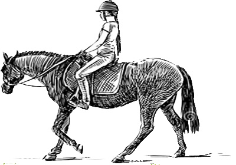

Even its position terrestrially is one of the elements of a new interest, and for no particular reason save that the incident of the night had occurred there, Oak went again into the plantation.
here is the link about the story
Lingering and musing here, he heard the steps of a horse at the foot of the hill, and soon there appeared in view an auburn pony with a girl on its back, ascending by the path leading past the cattleshed. She was the young woman of the night before.Gabrie instantly thought of the hat she had mentioned as having lost in the wind possibly she had come to look for it. He hastily scanned the ditch, and after walkingabouttenyardsalongit, foundthehatamongthe leaves.Gabriel took it in his hand and returned to his hut. Here he ensconced himself and peeped through the loophole in the direction of the rider's approach.
She came up and looked around—then on the other side of the hedge. Gabriel was about to advance and restore the missing article, when an unexpected per- formance induced him to suspend the action for the present. The path, after passing the cowshed, bisected the plantation. It was not a bridle-path—merely a pedestrian's track, and the boughs spread horizontally at a height not greater than seven feet above the ground.which made it impossible to ride erect beneath them. The girl, who wore no riding-habit, looked around for a moment, as if to assure herself that all humanity was out of view, then dexterously dropped backwards flat upon the pony's back, her head over its tail, her feet against its shoulder, and her eyes to the sky. The rapidity of her glide into this position was that of a kingfisher—its noiselessness that of a hawk. Gabriel's eyes had scarcely been able to follow her. The tall lank pony seemed used to such doings, and ambled along unconcerned. Thus she passed under the level boughs.
